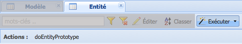

Menu des fonctions : exécuter¶
Fonction Exécuter pour les modèles¶

Figure 10 : fonction exécuter et son sous-menu.
La fonction Exécuter dans le cas des modèles consiste en deux actions : doModelPrototype et doModelGraph. doModelPrototype génère les vues du prototype pour un modèle sélectionné. doModelGraph génère le modèle conceptuel graphique pour un modèle sélectionné.
Générer le prototype d’un modèle sélectionné¶
Cette démarche tient pour acquis que le modèle de données à prototyper est déjà complété : toutes les entités ont des attributs et il y a des relations créés entre les entités.
- À partir de l’onglet Modèle, cliquez sur la ligne de la grille principale qui corresponde au modèle à prototyper.
- Cliquez sur le bouton Exécuter du menu des fonctions ou sur le petit triangle noir situé du côté droit du même bouton. Le petit triangle noir affiche les deux options disponibles pour Exécuter.
- Cliquez sur l’option doModelPrototype. Un message de confirmation de l’opération sera affiché sur l’interface (voir la barre de message pour plus de détails ).
- Déplacez-vous sur les fonctions du menu principal. Cliquez sur le bouton
 Réinitialiser menu pour faire apparaître
dans le menu principal les vues récemment créées.
Réinitialiser menu pour faire apparaître
dans le menu principal les vues récemment créées.
Note
Les nouvelles vues sont générées automatiquement à l’intérieur de l’arborescence AutoMenu -> ProtoOptions. Notez que les vues des prototypes antérieures sont aussi affichées avec les vues récemment créées. Une vue est créée pour chaque entité dans le modèle de données. Vous aurez le même nombre de vues que des entités. Les noms des vues sont composés du nom du modèle suivi d’un tiret (-) et du nom de l’entité qu’elle représente.
- Les vues dans l’arborescence AutoMenu -> ProtoOptions sont de vues générées automatiquement, si vous effectuez des modifications sur ces vues, la prochaine fois que le menu principal sera rafraîchi, les vues retourneront à leur valeur par défaut. Pour garder les modifications des vues, il est nécessaire de créer un nouveau dossier sur l’arborescence du menu principal. Passez aux prochaines étapes.
- Cliquez sur le bouton Nouveau dossier du menu principal. Entrez le nom du nouveau dossier, par exemple le nom du projet. Le nouveau dossier apparaîtra à la fin de la liste des vues générées dans AutoMenu -> ProtoOptions.
- Procédez à glisser-déposer à l’intérieur de ce dossier chacune de vues appartenant à ce projet. Sélectionnez une vue à la fois.
- Quand toutes les vues seront à l’intérieur du dossier, glissez et déposez le dossier vers l’arborescence du menu principal. Par exemple, après la composante relation. Assurez-vous que le dossier se retrouve à l’extérieur de l’arborescence AutoMenu.
- Sélectionnez AutoMenu et cliquez sur le bouton
 Supprimer noeud du menu principal. Ceci effacera l’arborescence
d’AutoMenu (la suppression n’est pas définitive, pour récupérer cette arborescence cliquez sur le bouton réinitialiser du menu
principal).
Supprimer noeud du menu principal. Ceci effacera l’arborescence
d’AutoMenu (la suppression n’est pas définitive, pour récupérer cette arborescence cliquez sur le bouton réinitialiser du menu
principal). - Pour terminer, cliquez sur le bouton Enregistrer menu du menu principal.
Warning
Si vous n’enregistrez pas les modifications au menu, elles seront perdues à la fermeture de l’application du prototypeur.
Fonction « Exécuter » pour les entités¶
Figure 11 : fonction exécuter et son sous-menu.
La fonction Exécuter dans le cas des entités a une seule action : doEntityPrototype. doEntityPrototype génère une nouvelle vue à partir d’une entité sélectionnée.
Générer une vue à partir d’une entité sélectionnée¶
- À partir de l’onglet Entité, sélectionnez sur la ligne de la grille principale qui correspond à l’entité.
- Cliquez sur le bouton Exécuter du menu des fonctions ou sur le petit triangle noir situé du côté droit du même bouton. Le petit triangle noir affiche les deux options disponibles pour Exécuter.
- Cliquez sur l’option doEntityPrototype. Écrivez le nom de la nouvelle vue dans la fenêtre affichée à l’écran. Un message de confirmation de l’opération sera montré sur l’interface ( voir la barre de message <barre_message> pour plus de détails ).
- Déplacez-vous sur les fonctions du menu principal. Cliquez sur le bouton Réinitialiser menu pour faire apparaître dans
le menu principal la vue récemment créée.
Note
Les nouvelles vues sont générées automatiquement à l’intérieur de l’arborescence AutoMenu -> ProtoOptions. Notez que les vues des prototypes antérieures sont aussi affichées avec les vues récemment créées. Une vue est créée pour chaque entité dans le modèle de données. Vous aurez le même nombre de vues que des entités. Les noms des vues sont composés du nom du modèle suivi d’un tiret (-) et du nom de l’entité qu’elle représente.
- Les vues dans l’arborescence AutoMenu -> ProtoOptions sont de vues générées automatiquement, si vous effectuez des modifications sur ces vues, la prochaine fois que le menu principal sera rafraîchi, les vues retourneront à leur valeur par défaut. Pour garder les modifications des vues, il est nécessaire de créer un nouveau répertoire sur l’arborescence du menu principal. Si vous avez déjà créé un dossier pour le projet, glissez la nouvelle vue à l’intérieur de ce dossier. Dans le cas contraire, passez aux prochaines étapes.
- Cliquez sur le bouton Nouveau dossier du menu principal. Entrez le nom du nouveau dossier, par exemple le nom du projet. Le nouveau dossier apparaîtra à la fin de la liste des vues générées.
- Procédez à glisser-déposer à l’intérieur du dossier chacune de vues appartenant à ce projet. Sélectionnez une vue à la fois.
- Quand toutes les vues seront à l’intérieur du dossier, glissez et déposez le dossier vers l’arborescence du menu principal. Par exemple, après la composante relation. Assurez-vous que le dossier se retrouve à l’extérieur de l’arborescence AutoMenu.
- Sélectionnez AutoMenu et cliquez sur le bouton Supprimer noeud du menu principal. Ceci effacera l’arborescence
d’AutoMenu (la suppression n’est pas définitive, pour récupérer cette arborescence cliquez sur le bouton réinitialiser du menu
principal).
- Pour terminer, cliquez sur le bouton Enregistrer menu du menu principal.
Warning
Si vous n’enregistrez pas les modifications au menu, elles seront perdues à la fermeture de l’application du prototypeur.